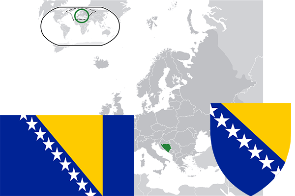

To`liq nomi: Bosniya va Gersegovina Respublikasi
Region: Janubiy-sharqiy yevropa
Qonunchilik shakli: Respublika
Mustaqillik kuni: 5-aprel 1992 yil
Poytaxti: Saraevo
Maydoni: 51197 km² (dunyoda 125 -o`rinda )
Chegaradosh davlatlari: Xorvatiya, Serbiya, Chernogoriya
Aholisi: 3 531 159 (dunyoda 129 -o`rinda ) 2013 -yil roʻyxat
Aholi zichligi: 68,97 /km²
Aholining o`rtacha yoshi: 78,3 yil ( 82,0 ayollar, 74,6 erkaklar)
Rasmiy tili: Bosniya,Serb va Xorvat tillari
Dini: 44% musulmon, 31% pravoslav, 17% katolik
Pul birligi: Bosniya markasi
Telefon prefiksi: +387
Internet domen: .ba
Xalqaro tashkilotlarga a`zoligi: BMT (1992 –yildan)
Dengiz va okeanlarga chiqishi: Adriat dengizi
YIM: Butun: $ 37,8 mlrd, Jon boshiga: $ 9891 (2012 - yil roʻyxati)
Yirik shaharlari: Saraevo, Banya-Luka, Tuala, Zenitsa